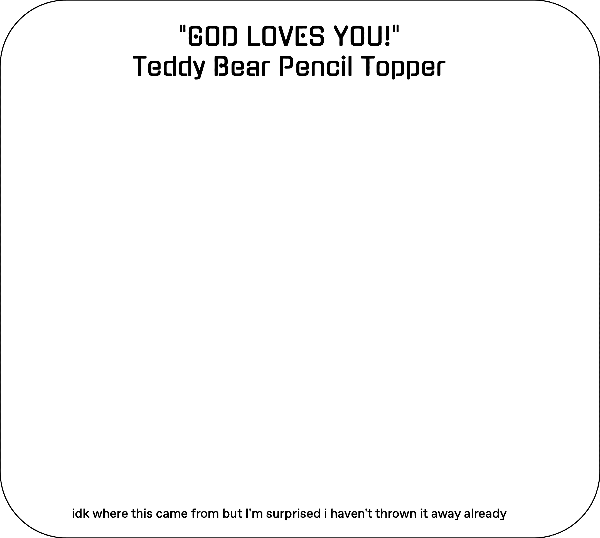
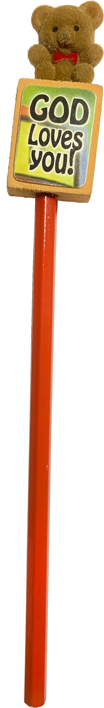
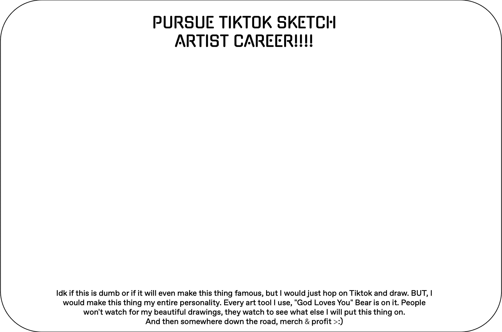
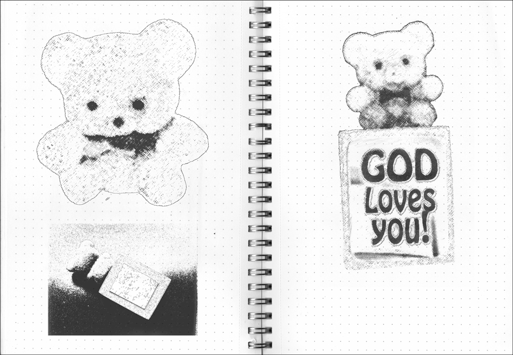
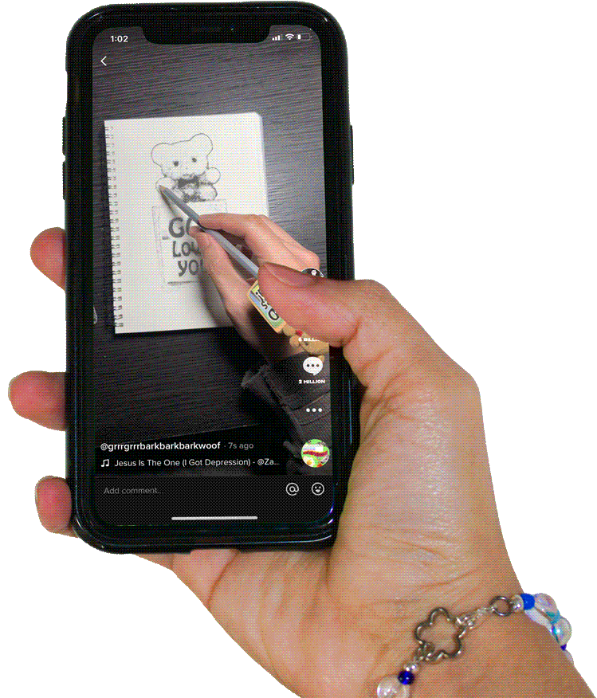

| 3. How would you make an object in your bedroom famous? | |





|
|
| 1. | |
| 2. | |
| 3. | |
| 4. | |
| 5. | |
| ⊂☆⊃ | |
|
(I don't know if I'm being overly confident, but I could actually see this working.)
The “GOD LOVES YOU!” Teddy Bear Pencil Topper (T.B.P.T.) is a decorative item I’ve kept in my pencil cup since I found it between the bookshelves in my house. I found it while I was going through a low. Reading "God Loves You!" made me roll my eyes because I am not religious. But if there is God, I’m sure she does love me (and I love her too). If I wanted to make ANYTHING famous, I’d post on Tiktok. Everything goes viral there these days, plus TikTok videos find their way into other social media platforms. First, I would figure out what type of audience I want to engage. From experience, the posts that have gotten me the most attention are from when I participated in certain groups/fanbases. Likes,retweets, &reblogs would come from people belonging to a certain ‘flock’. For the T.B.P.T., I’m going to engage the artist side of Tiktok. From my personal experience going to art school, art students/artists LOVEE cute, eccentric, impractical junk (especially if it’s old). Additionally, pencil toppers are compatible within the realm of art— pencils (the ones being topped) are an artist tool. For video content, I’m just going to draw all kinds of stuff (I don’t think content matters too much). However, the real star of the video is T.B.P.T. I will put it on every single art tool I use in all of the videos. It will become my entire personality. It could worn by my markers, pens, charcoal blocks, paintbrushes, tortillons, or wacom stylus. I’ll even put it on a hot glue gun if it ever gets to that point. The key here is to be consistent and keep posting. Soon enough, I will be terrorizing the internet with a teddy bear propagating that “ God Loves Them!”. |
|